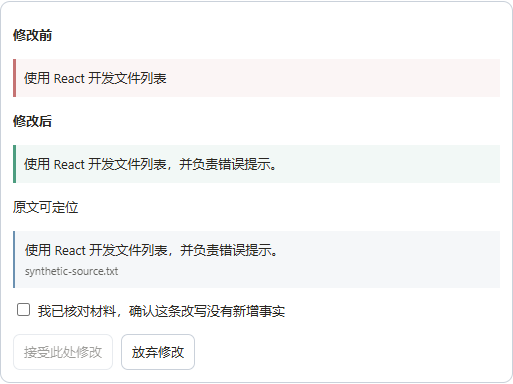

2026.09 · 团队协作
Candidate Knowledge Base · 实现示意
source_idsource_quotesource_position
模型可以选择任务，不能授予自己权限。
问题、判断与实现细节

技术栈与个人贡献
前端：React / JavaScript，负责近期 AI 辅助补充的差异确认、截图校对与版本交互。后端：Node.js / Express / SQLite，原有个人贡献聚焦候选人知识库、检索隔离与工具授权。
AI 应用：Claude Agent SDK、Transformers.js、本地 Embedding、关键词与向量 RRF 混合召回。文档与验证：Python / ZIP/XML、OCR、Playwright、Node.js 测试。
团队协作项目；近期前后端功能与验证由 AI 辅助完成。这里列出已落地的项目技术，不代表独立完成整个团队项目，也不把依赖清单等同于个人熟练度。
2026.11 · 开源二次开发 · AI 辅助实现
AnythingLLM · 证据检索评测
分清证据没被召回，还是在排序后丢失。新增评测 UI / API、任务记录与 BM25 / RRF 混合召回，复用上游工作空间和模型适配。
React · Express · SQLite · pgvector。真实 E5 模型与重排已验证；20 道合成验收题不代表生产准确率，混合配置尚未显示指标增益。
截图 JD 与原样式编辑
PNG/JPEG 岗位截图经本地 OCR 识别，用户校对后设为目标岗位，不写入候选人事实库。原始 DOCX 可选普通同样式段落修改，预览确认后保存独立版本；保留页眉、表格、样式等其他部件，不套统一模板。
一个合成 DOCX 经 Word 渲染，修改前后均一页，18 个其他部件原字节不变，像素差异限于修改的那一行。只覆盖该测试模板；混合字体、复杂对象和更长文本不自动替换，PDF 原样式编辑暂不支持。
查看截图识别与原样式前后对比从建议到可确认的修改
新增单条编辑与 AI 改写建议：先展示前后文本和来源，再由用户确认。按岗位要求逐条检索原文；相似片段只作线索，不直接判定符合。版本存入 SQLite，可恢复、下载固定版本的 PDF / DOCX，接受前检查当前稿和材料是否已变化。
本地合成材料的真实 DeepSeek 建议、确认与恢复，以及浏览器操作和指定版本导出已通过。初稿为预置数据，非本轮重新生成；新增代码尚未推送团队仓库。
实际检索实现
上传文本按 450 字符切分。本地 multilingual-e5-small 生成 384 维向量，SQLite 按用户与候选人隔离保存，精确余弦检索与关键词召回通过 RRF 融合，保留来源与证据预算。索引在检索时按内容哈希更新。六题合成开发样例：Top-1 从关键词 1/6 到混合 3/6，Hit@3 为 6/6；不是独立准确率，未接入 Rerank 或 ANN。
问题
在 AI 求职 Agent 里，岗位要求或模型猜测一旦混进候选人事实库，后续定制简历就可能写出这个人没做过的经历。团队项目里，我负责候选人知识库与工具授权这一层：既要让模型找得到背景，也要限制它能读谁的资料、能把什么当事实。
判断
事实从哪里来、检索属于谁、工具能不能调用，都应该由代码决定。我没有把这些边界全交给提示词。模型可以选择任务做法，不能给自己的调用授权；出问题时，要能定位到具体的权限和证据记录。
做法
事实记录保存 source_id / source_quote / source_position，只从上传文档的统一写入路径抽取。检索按服务端持久化的 user_id + candidate_id 隔离，工具不暴露作用域字段，越权报错；证据包限制为 8 条事实、4 段原文、4000 字符。工具权限由服务端计算，模型输出不参与。回归测试曾发现，同轮查询教育、项目和技能时，trace 只留最后一次；我把覆盖写入改为本轮累加，保住前面的取证记录。
结果
团队项目中，我负责候选人知识库、检索隔离、工具授权与四个 Career Skill。近期在 AI 辅助下补做本地真实模型验证：一个合成材料的上传、JD 输入、生成与现有校验、PDF/DOCX 导出流程已跑通。PDF 检查过页面，DOCX 检查了内容与结构；完整语义正确性仍未验证，已知年限推断仅有有限规则保护。团队其他模块不计入个人贡献，本地改动不等于团队远端已更新。